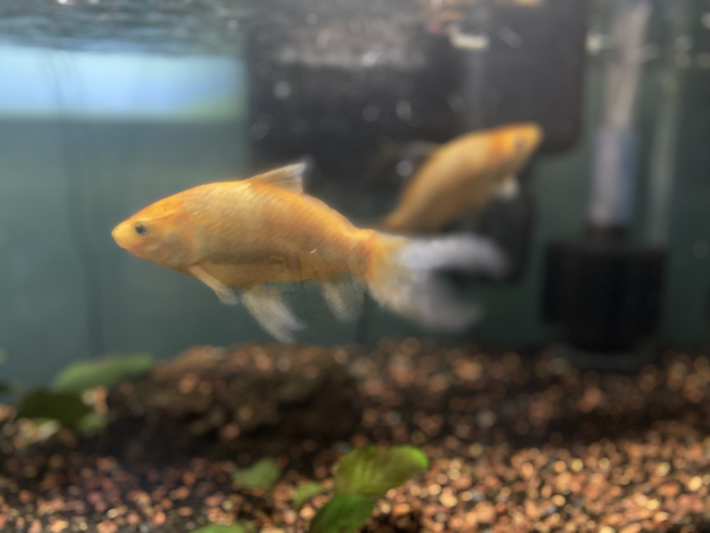
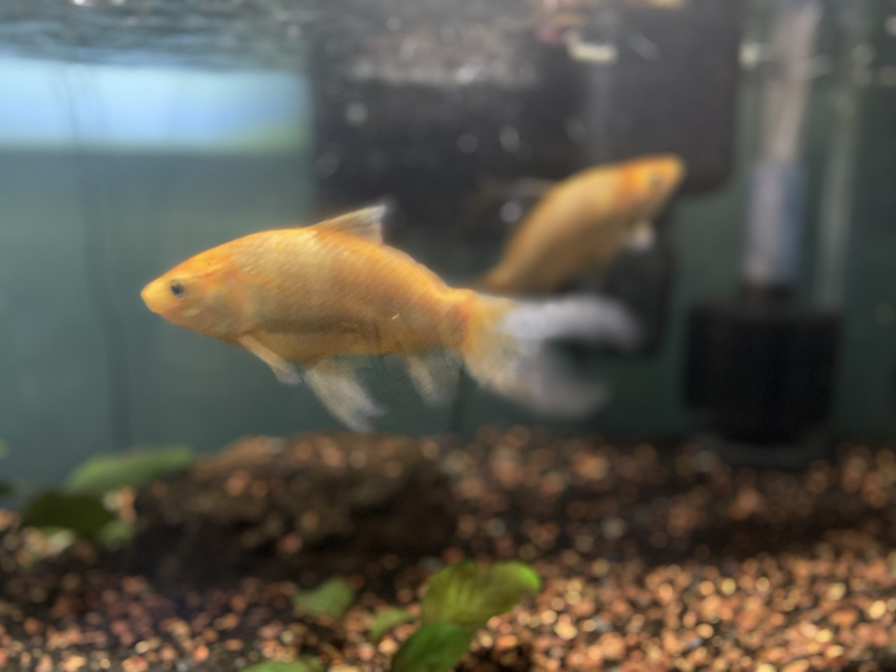

Hallo! I'm Anaiya and I'm here to tell you a little about fish-keeping. I own
6 goldfish Kap, Lenny, Ignacio, Bishop, Arkham, and Krane. I've had Kap and Lenny since 2020, Ig and Bish since 2021, and the last two I got this year (2022).
I'm a highschool student and I attended Madison Academic High School, I got into the fish hobby when I won my very first goldfish Trio at a fall fest. Sadly Trio and two others
aren't with me anymore, but I had had them from around 2015 to 2020.
Goldfish are capable to live up to 14 years if they are taken care of correctly.
 
<

<